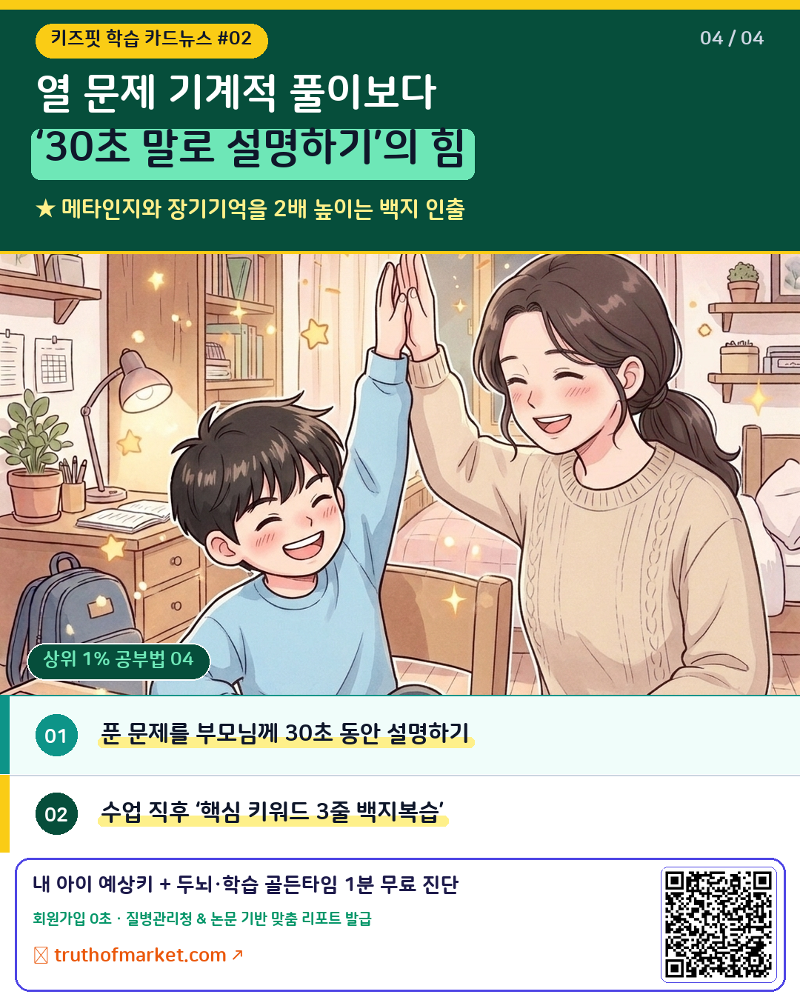
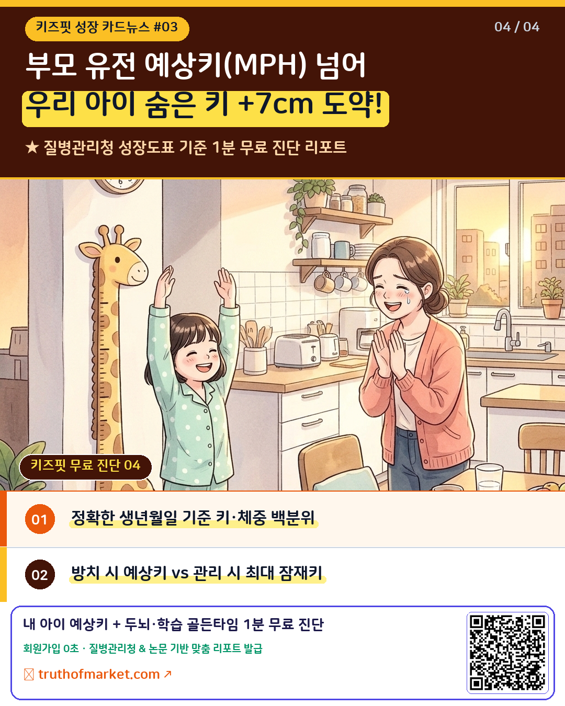

🎨 키즈핏 @gangjidol 감성 4컷 웹툰 (1~3화 화별 저장) & 카드뉴스 (1~3탄) 센터
각 화별로 폴더 정리 및 원클릭 ZIP·컷별 저장, 인스타·쓰레드 본문 복사가 가능합니다.
💬 1. 인스타·쓰레드 동시 업로드용 4컷 공감 웹툰 (1화 · 2화 · 3화 화별 저장)
🌱 1화: 만 3세 '내가 혼자 할 거야!' 고집의 진짜 이유 (손끝 소근육 민감기)


"싫어!! 엄마 저리 가! 내가 혼자 끼울 거야!!" 😭 바쁜 아침, 물은 다 쏟아놓고 단추 하나에 10분째 씨름하는 아이 보며 속에서 천불 나셨던 적 있으시죠? 저도 처음엔 아이가 유독 고집이 세고 반항하는 줄만 알았어요. 그런데 뇌과학 데이터를 찾아보고 머리를 한 대 맞은 것 같았습니다. 🧠 만 2~4세 아이가 유독 "내가! 내가!"를 외치는 이유, 엄마를 힘들게 하려는 반항이 아니라 대뇌 피질의 약 30%와 직결된 [손끝(소근육) 민감기]가 폭발하고 있다는 기특한 신호였어요! 신경외과 학자 펜필드(Penfield)의 뇌 지도에 따르면, 우리 뇌 운동·감각 영역의 30% 이상이 오직 '손과 열 손가락'에 연결되어 있습니다. 아이의 뇌가 "지금 내 손끝 신경회로를 연결해야 전두엽이 자라요! 엄마 대신 해주세요 하지 말고 내가 직접 만지게 해주세요!"라고 온몸으로 외치고 있었던 거죠. 💡 오늘부터 '엄마가 빨리 해줄게!' 대신 이렇게만 바꿔보세요: 1️⃣ 단추·지퍼 전쟁 대신 [나무 집게로 색깔 폼폼이 옮기기] 👉 엄지·검지·중지 세 손가락 힘(소근육 협응력)이 길러지면 단추 끼우기와 연필 잡기가 거짓말처럼 수월해져요. 2️⃣ 쏟고 흘리는 물 따르기 대신 [구슬 꿰기 & 안전가위 종이 오리기] 👉 눈과 손의 협응력(Eye-Hand Coordination)과 전두엽 집중력이 동시에 폭발하는 최고의 두뇌 자극 놀이입니다. 3️⃣ 결과물보다 '기다림' 선물하기 👉 삐뚤빼뚤 오린 하트 종이 하나에도 "네 힘으로 해냈네!" 하고 안아주면, 아이의 자기효능감과 자율성이 단단하게 자라납니다. 우리 아이가 지금 어떤 발달 민감기를 지나고 있는지, 또래 대비 신체 성장 백분위와 두뇌·인지 발달 밸런스는 어떤지 궁금하시다면? 📌 지금 프로필 상단 링크(@kids_fit1)에서 질병관리청 성장도표 & 발달 기준 논문 2,723편 기반 [우리 아이 1:1 성장·두뇌 발달 정밀 리포트]를 1분 만에 무료로 확인해 보세요! 💌 (오늘 저녁 아이와 함께 해보실 분들은 오른쪽 아래 [저장 🔖] 꾹 눌러두세요! ♥) #육아툰 #인스타툰 #만3세 #미운네살 #소근육발달 #몬테소리 #두뇌발달 #엄마표놀이 #육아스타그램 #워킹맘육아 #아이키성장 #키즈핏 【쓰레드 1번째 본문 (00_전체_4컷_한눈에보기_합본.png 1장과 함께 그대로 붙여넣기)】 바쁜 아침에 물 다 쏟고 "싫어! 엄마 저리 가! 내가 혼자 단추 끼울 거야!!" 하고 우는 아이 보면서 한숨 쉬어본 엄빠들 계시죠? 😭 저도 애가 왜 이렇게 고집이 세졌나 싶었는데, 소아 신경발달 데이터를 보고 완전히 반성했습니다. 만 2~4세 아이가 갑자기 모든 걸 자기 손으로 하겠다고 고집부리는 건 '반항'이 아니라, 대뇌 피질의 30%와 직결된 [손끝 소근육 민감기]가 열렸다는 뇌의 신호래요. 뇌가 한창 손끝 시냅스를 연결하려고 애쓰는 중이라는 걸 알고 나니, 단추 하나 끼우느라 낑낑대는 고사리손이 그렇게 기특해 보일 수가 없더라고요. 주말에 나무 집게로 공 옮기기랑 안전가위 오리기를 해줬더니 혼자 하트를 오려와서 "엄마 선물!" 하고 건네는데 코끝이 찡했습니다🥹 ────────────────────────────────── 【쓰레드 2번째 이어쓰기 답글 (내 글 바로 아래 댓글로 그대로 붙여넣기)】 오늘도 "내가 혼자 할 거야!" 병에 걸린 아이 기다려주느라 애쓰신 모든 엄빠들, 우리 아이 뇌가 폭풍 성장 중이라는 뜻이니 오늘 밤엔 꼭 한 번 더 안아주자고요 ♥ 💡 우리 아이 개월 수별 소근육·두뇌 발달 밸런스랑 질병관리청 기준 키 백분위는 제가 참고한 무료 진단 리포트에서 회원가입 없이 1분 만에 확인해 보실 수 있어요! 👉 https://truthofmarket.com/?utm_source=threads&utm_medium=organic_social&utm_campaign=kidsfit_diagnosis
🧠 2화: 연산은 100점인데 문장제 수학만 별표 치는 아이 (전두엽 작업기억의 비밀)


"연산 시험지는 100점 맞으면서, 왜 세 줄짜리 문장제 문제만 나오면 읽지도 않고 별표(★)부터 칠까?" 😭 문제집 풀 때마다 "엄마 이거 더하는 거야 빼는 거야?" 물어보는 아이 보며 답답하셨던 적 있으시죠? 저도 처음엔 책을 덜 읽어서 국어 문해력이 부족한 줄만 알았어요. 그런데 인지뇌과학 논문을 찾아보고 완전히 오해였다는 걸 깨달았습니다. 🧠 연산은 잘하는데 문장제 수학만 막히는 진짜 이유, 국어 실력이 부족해서가 아니라 머릿속 작은 칠판인 [전두엽 작업기억(Working Memory)] 용량이 과부하에 걸렸기 때문이었어요! 인지심리학자 배들리(Baddeley)의 작업기억 모델에 따르면, 초등 저학년 아이의 머릿속 칠판에는 한 번에 2~3개의 정보밖에 띄워둘 수 없습니다. 눈으로만 문제를 읽으며 머릿속으로 암산하려고 하니, 마지막 줄을 읽을 때쯤 앞줄의 숫자가 칠판에서 지워져 버리는 거였죠! 💡 오늘 저녁 수학 문제집 풀 때 '다시 읽어봐!' 대신 이렇게만 바꿔보세요: 1️⃣ 눈으로만 읽기 대신 [구하는 것에 동그라미(○), 조건에 밑줄(ㅡ)] 👉 손끝으로 표시하며 읽는 순간 시각 정보가 분리되어 전두엽의 부담이 절반으로 줄어듭니다. 2️⃣ 머릿속 암산 대신 [종이 여백에 간단한 상자·막대 그림 그리기] 👉 문제집 빈 공간을 '두 번째 칠판'으로 쓰게 해주면 더할지 뺄지 아이 스스로 한눈에 찾아냅니다. 3️⃣ 열 문제 양치기 대신 [내가 푼 한 문제 엄마에게 30초 설명하기] 👉 "왜 이 식을 세웠는지 엄마한테 선생님처럼 알려줄래?" 한마디면 메타인지와 수학 자존감이 폭발합니다. 우리 아이의 전두엽 작업기억·수리추론·문해력·메타인지 5대 학습 역량(LQ)은 지금 몇 점인지 궁금하시다면? 📌 지금 프로필 상단 링크(@kids_fit1)에서 질병관리청 성장도표 & 두뇌·학습 논문 2,723편 기반 [우리 아이 1:1 신체 성장 × 두뇌 학습 마스터 리포트]를 1분 만에 무료로 확인해 보세요! 💌 (오늘 저녁 아이 수학 봐주실 분들은 오른쪽 아래 [저장 🔖] 꾹 눌러두세요! ♥) #초등수학 #문장제수학 #서술형수학 #초등공부법 #작업기억 #메타인지 #하브루타 #초등맘 #육아툰 #인스타툰 #두뇌발달 #키즈핏 【쓰레드 1번째 본문 (00_전체_4컷_한눈에보기_합본.png 1장과 함께 그대로 붙여넣기)】 연산 시험지는 100점 맞으면서 문제가 세 줄만 넘어가면 읽지도 않고 별표(★)부터 치거나 "엄마 이거 더하는 거야 빼는 거야?" 물어보는 아이 보며 한숨 쉬어본 엄빠들 계시죠? 😭 저도 우리 애가 국어 독해력이 부족한가 싶었는데, 인지뇌과학 데이터를 보고 완전히 반성했습니다. 초등 아이가 문장제 수학에서 막히는 건 국어 문제가 아니라, 머릿속 작은 칠판인 [전두엽 작업기억] 용량이 꽉 차서 앞줄 숫자가 지워지는 현상이래요! 암산하라고 다그칠 게 아니라 문제집 여백에 '상자 그림' 하나만 그리게 해줬더니, 혼자 식 세우고 맞히면서 "엄마 나 수학 천재인가 봐!" 하고 하이파이브하는데 어찌나 기특하던지요🥹 ────────────────────────────────── 【쓰레드 2번째 이어쓰기 답글 (내 글 바로 아래 댓글로 그대로 붙여넣기)】 오늘도 아이 문제집 옆에서 참을 인(忍) 세 번 새기며 애쓰신 모든 엄빠들, 아이 머릿속 칠판을 종이 여백으로 넓혀주는 작은 습관 하나로 오늘 저녁은 웃으며 하이파이브해 보자고요 ♥ 💡 우리 아이 전두엽 작업기억·문해력·수리력 5대 학습 역량(LQ) 점수랑 신체 성장 백분위는 제가 참고한 무료 리포트에서 회원가입 없이 1분 만에 확인하실 수 있어요! 👉 https://truthofmarket.com/?utm_source=threads&utm_medium=organic_social&utm_campaign=kidsfit_diagnosis
📏 3화: 밤마다 우유 먹였는데 키가 안 큰다고요? (밤 10시 성장호르몬 & 하체 스트레칭)


"키 크라고 매일 밤 자기 전에 우유 한 잔씩 꼭 먹였는데, 오히려 성장호르몬을 방해하고 있었다고?!" 😱 또래보다 작아 보이는 아이 볼 때마다 속상해서 밤마다 우유·간식 챙겨주셨던 엄빠들 계시죠? 저도 자기 전에 우유를 마셔야 밤새 뼈가 자라는 줄만 알았어요. 그런데 소아내분비학 논문을 찾아보고 완전히 반대로 하고 있었다는 걸 알았습니다. 📏 잠들기 직전 먹인 우유와 야식이 키 성장을 막는 진짜 이유, 1️⃣ 우유를 마시면 배가 꾸르륵거리는 아이(유당불내증)는 칼슘이 흡수되지 않고 깊은 잠만 깨웁니다. 2️⃣ 시카고대 반 카우터(Van Cauter) 교수의 수면 내분비 연구에 따르면, 하루 성장호르몬(GH)의 약 70%는 밤 10시~새벽 2시 '첫 깊은 서파수면(Slow-Wave Sleep)'에서 폭발하는데, 자기 전 음식물이 들어와 혈당과 인슐린이 높아지면 뇌하수체의 성장호르몬 스위치가 꺼져버립니다! 💡 오늘 밤부터 '자기 전 우유 한 잔' 대신 이렇게만 바꿔보세요: 1️⃣ 밤 우유 대신 [저녁 식사 때 두부·잔멸치·치즈 + 구연산칼슘·비타민D3·아연] 👉 뼈 재료는 저녁 식사 시간에 미리 채워주고, 잠들기 2시간 전부터는 편안한 공복 상태를 만들어주세요. 2️⃣ 밤 9시 40분 [침대 위 5분 무릎·종아리 성장판 이완 마사지] 👉 낮 동안 뛰어놀며 눌려 있던 하체 성장판 주변 근육을 따뜻하게 풀어주면 성장통도 예방되고 깊은 잠에 스르륵 빠져듭니다. 3️⃣ 밤 10시 정각 [스마트폰 끄고 암막 소등하기] 👉 멜라토닌이 켜져야 성장호르몬과 해마 장기기억 코팅이 동시에 시작됩니다. 질병관리청 성장도표 기준 우리 아이의 정확한 키·몸무게 백분위와 부모 유전 예상키(MPH) 대비 '숨은 키 +7cm 최대 잠재키'가 몇 cm인지 궁금하시다면? 📌 지금 프로필 상단 링크(@kids_fit1)에서 질병관리청 성장도표 & 소아성장 논문 2,723편 기반 [우리 아이 1:1 신체 성장 × 두뇌 발달 정밀 리포트]를 1분 만에 무료로 확인해 보세요! 💌 (오늘 밤 9시 40분 아이 다리 주물러주실 분들은 오른쪽 아래 [저장 🔖] 꾹 눌러두세요! ♥) #아이키성장 #어린이키성장 #키크는습관 #성장호르몬 #밤10시수면 #어린이칼슘 #성장판스트레칭 #초등키성장 #육아툰 #인스타툰 #키즈핏 【쓰레드 1번째 본문 (00_전체_4컷_한눈에보기_합본.png 1장과 함께 그대로 붙여넣기)】 키 크라고 매일 밤 자기 직전에 우유나 과일 챙겨주시는 엄빠들 계신가요? 😭 저도 밤에 우유를 먹여야 자면서 키가 크는 줄 알았는데, 소아내분비학 논문을 보고 깜짝 놀랐습니다. 하루 성장호르몬의 70%가 밤 10시~새벽 2시 깊은 서파수면에서 나오는데, 자기 전 2시간 안에 우유나 야식이 들어가서 인슐린 수치가 올라가면 뇌에서 성장호르몬 분비 스위치를 꺼버린대요! 그 길로 밤 우유는 끊고 저녁 식사 때 두부·치즈·비타민D3를 챙겨준 뒤, 밤 9시 40분에 무릎·종아리 성장판 마사지 5분 해주고 10시에 재웠더니 이번 달에 드디어 키가 1cm 훌쩍 자랐습니다🥹 ────────────────────────────────── 【쓰레드 2번째 이어쓰기 답글 (내 글 바로 아래 댓글로 그대로 붙여넣기)】 오늘 밤엔 자기 전 간식 대신 따뜻한 손길로 아이 무릎이랑 종아리를 5분만 토닥여주자고요. 엄마 손길이 세상 최고의 성장호르몬 스위치니까요 ♥ 💡 질병관리청 성장도표 기준 우리 아이 정확한 키 백분위랑 부모 유전키(MPH) 대비 최대 잠재키는 제가 참고한 무료 리포트에서 회원가입 없이 1분 만에 계산해 보실 수 있어요! 👉 https://truthofmarket.com/?utm_source=threads&utm_medium=organic_social&utm_campaign=kidsfit_diagnosis
📊 2. 여백 없는 고대비 형광펜 하이라이트 카드뉴스 (폴더별 1탄 ~ 3탄)
카드뉴스 1탄: 만 3세 고집과 소근육 발달 (6장)


카드뉴스 2탄: 초등 문장제 수학과 전두엽 작업기억 (4장)



카드뉴스 3탄: 밤 10시 숙면과 숨은 키 +7cm 루틴 (4장)


